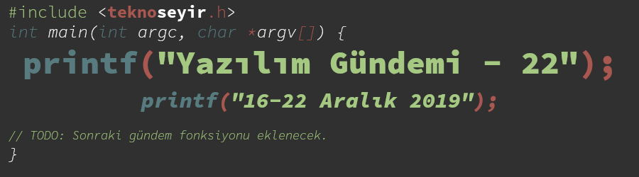
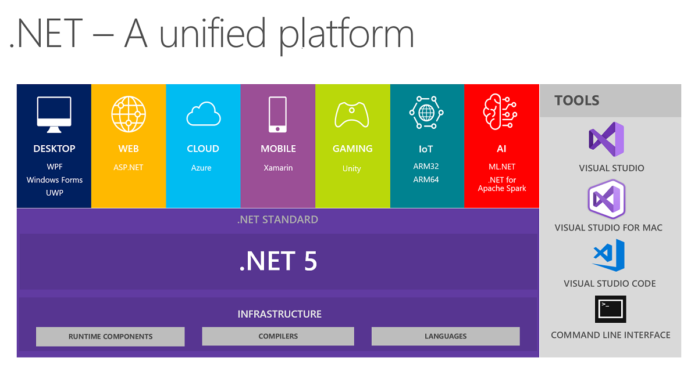
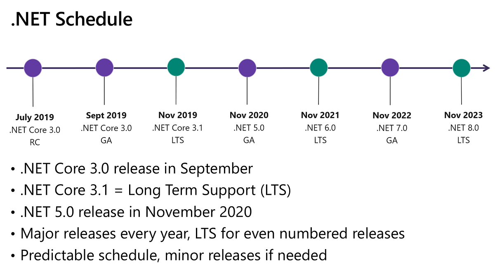
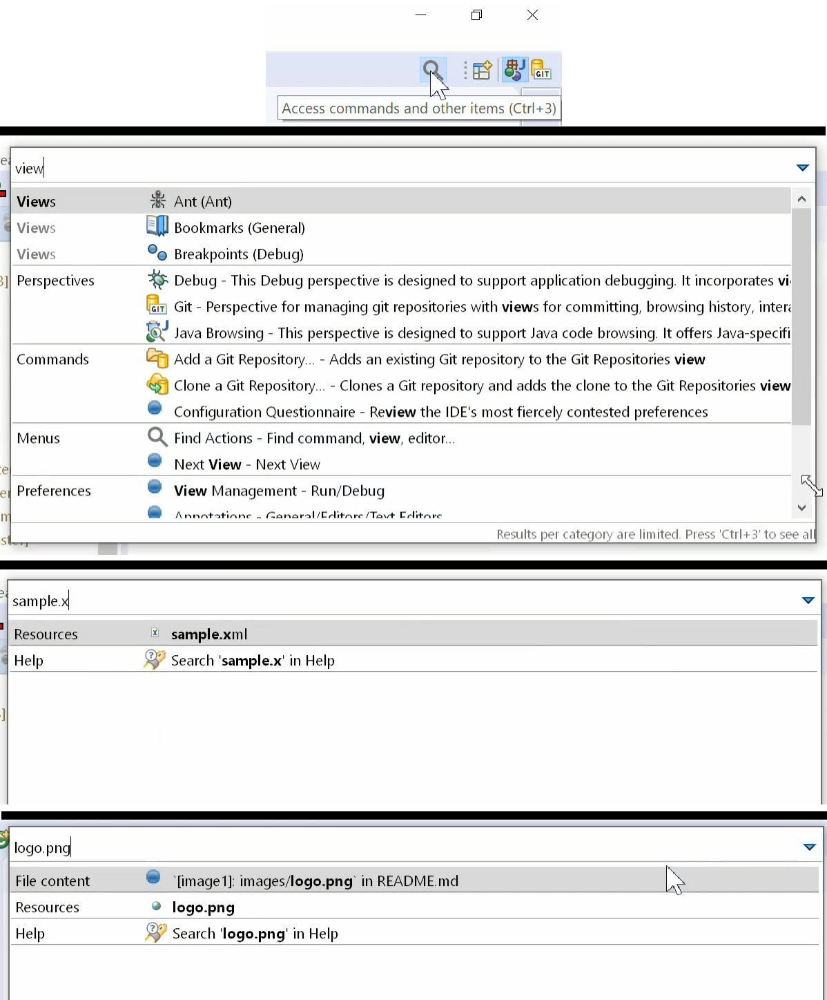
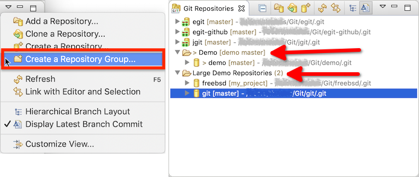
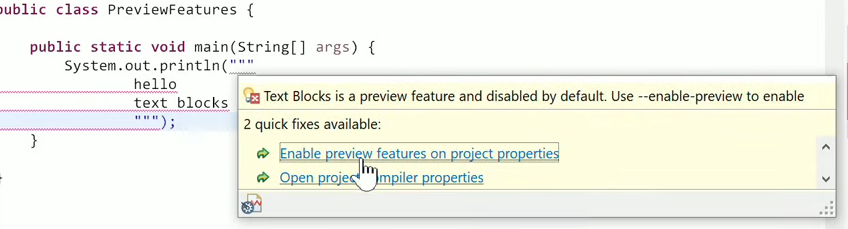

Yazılım Gündemi - 22
16-22 Aralık 2019
İçindekiler

< Önceki Gündem | 16-22 Aralık 2019 | Sonraki Gündem >
1 .NET 5 için yol haritası açıklandı
.NET Framework çoğumuzun da bildiği gibi Microsoft'un çok uzun zamandır geliştirmekte olduğu, tüm ekosistemini üzerine kurduğu bir uygulama çatısıydı. .NET Core ise son 3-4 yıldır geliştirilmekte olan açık kaynak, platformlar-arası (cross-platform) çalışabilen ve modern bir yapıya sahip uygulama çatısı. Yazılım dünyasında değişen trendlerle birlikte ortama ayak uyduran Microsoft, özellikle CEO olarak Satya Nadella'nın gelmesinden sonra açık kaynak camiasına ve kendisinden pek beklenmeyecek hamleler de yaptı. İşte .NET Core'da bu yeni anlayışın bir ürünü. Visual Studio Magazine dergisinin internet sitesinde bu hafta yayınlanan bir yazıyla birlikte daha önce Build 2019 etkinliğinde duyurulan .NET 5 yol haritası da özetlenmiş oldu. O etkinlik yazılım gündemi yazıları yazmaya başlamadan önceki bir tarihe denk geldiği için bu yazıyı fırsat bilerek gündeme almak istedim.

Bildiğiniz tüm .NET'leri unutun! Bundan sonra tek bir .NET olacak, o da: .NET 5 (Biraz reklam metini gibi oldu ama :)). Microsoft'un tüm uygulama geliştirme çözümleri (.NET Framework, .NET Core ve Xamarin/Mono) tek bir isim altında birleşiyor ama bu sefer ne "Framework" ne de "Core" gibi ek kelimeler olacak; sadece ".NET 5". 2020'nin ilk yarısı Preview sürümünün yayınlanması bekleniyor.
Önceki yazılım gündemlerinden birinde (bkz: Yazılım Gündemi - 14), Microsoft'un, .NET Framework API'lerinin .NET Core projesine aktarılmasının tamamlandığını duyurmuştu. O haberden Microsoft'un yöneliminin .NET Core üzerinden devam etmek üzerine olduğunu anlamıştık zaten ve işte bugün de kendimizi doğrulamış oluyoruz. .NET, eski kapalı-kaynak, sahipli, sadece Windows'da çalışan kabuğundan sıyrılıyor ve yeni açık kaynak modern kimliğine kavuşuyor.

.NET 5 sürümünün herkes tarafından erişilebilir (General Available) ilk sürümü Kasım 2020 tarihinde duyurulması planlanıyor. Planlanan takvime göre uzun-dönem desteklenecek (LTS - Long-term support) sürümler sadece tek sayılı yılların Kasım ayında yayınlanacak ve 3 yıl boyunca desteklenmeye devam edecek. .NET 5 sürümünün geliştirilmesini takip etmek isterseniz bu GitHub sayfasını ziyaret edebilirsiniz.
2 Ruby 3.0 ile argüman işleme sistemi değişecek
Bu haber aslında geçtiğimiz haftanın konusu ama geçtiğimiz hafta gündemi biraz geç yayınlamak durumunda olduğum için bu haberi bu haftaya ertelemiştim. Bir programlama dili ile ilgili önemli sayılabilecek bir değişiklik olduğu için haberi atlamak da istemedim. Ruby programlama dilinin 3.0 numaralı sürümünde bizi geriye uyumluluğu olmayan bir takım temel değişiklikler bekliyor.
Başka birkaç programlama dilinde de olduğu gibi Ruby dilinde de pozisyonel (positional) ve anahtar kelime (keyword) argümanları mevcut. Örnek üzerinden anlatmak gerekirse:
def foo(k: 14) puts k end h = { k: 24 } foo(h)
Bu kod parçasındaki foo fonksiyonunda argüman keyword şeklinde tanımlanmış.
Yani argümanın bir ismi var ve o argümana bir değer verilmediği zaman
alabileceği bir varsayılan değeri var. Sonrasında ise h isimli Hash
tipinde bir değişken tanımladık ve onu foo fonksiyonuna positional argüman
olarak gönderdik. Bu durumda Ruby 2.7, positional olarak gönderilen argümanı
alıp keywork şeklinde gönderiyor fonksiyona yani sorunsuz çalışıyor ama artık
Ruby 2.7 bu kod parçası için Warning göstermeye başlayacak çünkü bu otomatik
dönüştürme işlemi artık deprecate oldu ve Ruby 3.0'da bu kod parçası
çalışmayacak, ArgumentError hatası verecek.
def bar(h, **kwargs) puts h end bar(k: 42)
Bu kod parçasındaki bar fonksiyonu ise argümanlar bir positional ve bir
keyword şeklinde tanımlanmış. Sonrasında ise bar fonksiyonuna keyword
şeklinde bir argüman göndermişiz. Bu kod parçası da Ruby 2.7'de, keyword'den
Hash positional'a dönüştürülerek çalışıyor, tabii ki yine Warning
göstererek. Aynı şekilde bu kod parçası da Ruby 3.0'da çalışmayacak ve
ArgumentError hatası verecek.
"Peki bu tarz bir kullanım senaryosuna ihtiyaç duyduğumuzda ne yapacağız?" dediğinizi duyar gibiyim. Ruby geliştiricileri bu durumlarda kullanmak için şu özellikleri eklediler:
foo(**h)
bar({ k: 42 })
Bu şekilde kullandığınızda yine eskisi gibi kodlarınız çalışmaya devam edecek. Dediğim gibi her ne kadar birden bire desteği kesilmeyecek olsa bile bu değişikliğe uygun olarak kodlarınızı düzenlemeniz gerekecektir. Aklınızda bulunsun. Bu değişikliğin sebebi olarak ise keyword ve positional formattaki argümanların, birbirlerine çevrildikleri için karışıklık yaratması. Ruby 3.0'da çevrilmeyecekler ve fonksiyonlar hangi formatta argüman alması için kodlanmışsa o şekilde çalışacak.
Ayrıca bu hafta içerisinde Ruby'nin 2.7.0 Release Candidate 2 sürümü de duyuruldu. Final sürümünün ise 25 Aralık günü yayınlanması planlanıyor. Sanırım bir sonraki Yazılım Gündeminde "Ruby 2.7 ile gelen özellikler"i konuşacağız.
3 Eclipse 2019-12 duyuruldu
Her ne kadar genelde Java teknolojileri için kullanılsa da diğer birçok dil için de desteği olan geliştirme ortamı Eclipse, bu yılın son büyük numaralı sürümünü duyurdu. Yeni eklenen veya değişen çok fazla özellik var, hepsine burada değinemem elbette ama birkaç tanesini aktarmak gerekirse:

Diğer birkaç IDE ve metin editöründe de görmeye alıştığımız, tüm arama işlemlerinin tek bir pencere ya da popup panel üzerinden halledildiği arama özelliği sonunda Eclipse'ye de gelmiş. Artık aynı popup panel üzerinde hem Eclipse komutlarını ("Build", "Build&Run" vb. gibi menülerdeki her şey) hem de proje içerisindeki dosya isimlerini ve dosyaların içeriklerinde arama yapabileceğiz. Benim şahsen diğer IDE'lerde çok kullandığım bir özellik ve Eclipse'ye gelmiş olmasına sevindim. Bu özelliği kullanmak için menü çubuğunun hemen altındaki toolbarın en sağındaki kısımda bir büyüteç ikonu göreceksiniz ona tıklarsanız bahsettiğim popup panel açılır ya da CTRL + 3 kombinasyonlu kısayolu tercih edebilirsiniz.

Eclipse içerisinde aynı zamanda Git versiyon kontrol sistemi için entegre araçlar takımları da mevcut. Bu sürümde ise Git Repositories kısmına "Repository Group" özelliği geldi. İsminden de anlaşıldığı üzere birden çok git deposunu tek bir grup altında göstermeye yarayan bir özellik.

Bunların dışında java yetenekleri olarak da Java 13 ile birlikte gelen birçok özelliğe destek veriyor. Java 13 (JDK 13) ile gelen bir özellikten Yazılım Gündemi - 3 yazısında bahsetmiştim. O yazıda bahsettiğim çok satırlı String ifadeler özelliği artık Eclipse 2019-12'de destekleniyor. Yalnız bu özelliği öncelikle aktifleştirmek gerekiyor. Bunun için yukarıdaki ekran görüntüsündeki gibi bir kod yazıp, Quick Fix menüsünden ilgili özelliği aktifleştirebilir ya da menülerden Project > Properties > Java Compiler altındaki "Enable preview features for Java 13" yazısının yanındaki kutucuğu işaretleyerek aynı şekilde özelliği açabilirsiniz.
Eclipse 2019-12 sürümüyle birlikte gelen diğer özellik ve değişiklikler için konu başlığına eklediğim bağlantıya tıklayabilirsiniz.
4 Jetbrains, IntelliJ Platformu için 2020 yol haritasını açıkladı
JetBrains, yazılım sektörü için çok iyi araçlar ve diller üreten bir firma. Zaten yazılım sektörünün içinde olup ya da bu konulara ilgi duyup da JetBrains araçlarının en az birini kullanmamış olan yoktur diye tahmin ediyorum. Bu hafta içersinde de Java teknolojileri için geliştirdikleri IDE çözümü IntelliJ IDEA ve IntelliJ Platform tabanlı diğer IDE'ler için 2020 yılı yol haritasını açıkladılar. Yani bu yol haritası, Android Studio'yu da etkiliyor.
Yol haritasında öncelikli konu olarak "Performans" belirlenmiş. Geçtiğimiz yıl boyunca IDE'nin açılma hızıyla ilgili birkaç iyileştirme yapmışlardı. Önümüzdeki yıl ise indexing işleminin performansıyla ilgili iyileştirmeler üzerine çalışacaklarmış. IDE çalışırken gerek otomatik tamamlama özelliği için gerekse de diğer ihtiyaçlardan dolayı indexing işlemi yapıyor. Bir projeyi açarken en çok vakit alan kısım da zaten çoğunlukla bu oluyor. Bundan dolayı, indexing verilerinin takımlardaki kişiler arasında paylaşılabilmesini sağlamaya çalışacaklar. Yani bir proje sizin bilgisayarınızda indexlenmişse bunu başka bir bilgisayardaki IntelliJ ile açtığınızda tekrar indexing'e gerek kalmayacak. Bir de buna ek olarak bu indexing işlemi sırasında IDE'nin donmamasını sağlayacak iyileştirmeler yapılacakmış. Yani projeyi açıp, indexing işleminin bitmesini beklemek yerine kod yazmaya başlayabileceğiz ve indexing de arkaplanda olmaya devam edecek. Projeyi açtıktan sonra IDE'nin kendine gelmesini beklemek benim de pek sevmediğim bir durum o yüzden bu konudaki iyileştirmelere şahsen muhtacım.
Yol haritasındaki bir diğer konu ise özellikle 2019 yılında popülerliği oldukça artan "ortak düzenleme" (Collaborative Editing) konusu. Yani bir bilgisayarda çalışan IDE'ye başka bir bilgisayar üzerinden bağlanılması ve ortak bir çalışma ortamında kod yazılmasından bahsediyorum. Bu yönde çalışmaların devam ettiğini belirtmişler ve özelliğin öncelikle Rider isimli IDE'ye geleceğini daha sonra diğer IDE'lere de ekleneceğini belirtmişler ama bu özellik uzun soluklu bir efor gerektirdiği için öyle 2020'nin hemen ilk aylarında beklemeyin diyorlar.
Açıklanan yol haritasında çok daha fazla konu mevcut fakat hepsinden burada bahsedemem malumunuz eğer tüm yol haritası hakkında bilgi edinmek isterseniz konu başlığına eklediğim bağlantıya tıklayabilirsiniz.
5 Scala 3 için yol haritası açıklandı
JVM platformu üzerinde geliştirilen Scala programlama dilinin 3. sürümü için geliştirici takımı bir yol haritası yayınladı. Her ne kadar hiç deneyimim olmadığı bir programlama dili olsa da gündeme çeşitlilik katması açısından bunu da değerlendirmek istedim.
Öncelikle Scala 2.14 için çalışmayı bıraktıklarını ve o sürüm için planlanan her şeyin Scala 3'e aktarıldığını belirtmişler. Aslında Scala 2.13'ü bir ara geçiş sürümü olarak düşünmüşler ama sonrasında yaptıkları konuşmalardan sonra buna gerek olmadığına karar vermişler ve doğrudan 3 numaralı sürüme yükselmeye karar vermişler. İlk Release Candidate sürümünün 2020 yılı sonunda yayınlanması planlanıyor. Yani daha bir yıl var diyebiliriz.
Yol haritası yazısı boyunca en çok vurgu yapılan konu ise geriye ve ileriye uyumluluk mevzusu. Geriye uyumluluk (backwards compatibility) çok sık duyduğumuz bir kavram fakat ileriye uyumluluğu (forwards compatibility) ben de ilk kez duydum. Anladığım kadarıyla Scala 2.13 ve Scala 3 sürümleri hemen hemen aynı kodları çalıştırabilecekler. Bu uyumluluğun sağlanabilmesi için de standard library ismini verdiğimiz ana kütüphanede ekleme ve çıkarma yapmayacaklarmış, sadece olan sınıflar üzerinde geliştirmeler yapılacakmış. Fakat bu olay Scala 3.2 sürümüne kadar devam edecek, bu sürümden sonra ise kendine ait bir standard library ile yola devam edilecek. Anladığım kadarıyla Scala 3 bir geçiş sürümü olacak. Ayrıca Scala 2.13 sürümünde desteklenen macro özelliği Scala 3'te farklı bir hal alıyor, yani bu özelliği kullanan bir projeniz varsa o kısımları yeniden yazmak durumunda kalacaksınız.
Yol haritasındaki diğer detaylar için konu başlığına eklediğim bağlantıya tıklayabilirsiniz. Yanlış değerlendirdiğim bir durum varsa lütfen yorumlar bölümünde beni uyarın.
6 Yaklaşan Etkinlikler
| Etkinlik İsmi | Yeri | Tarihi |
|---|---|---|
| PostgreSQL'de İleri Seviyede Performans Yönetimi | Ankara | 24 Aralık 18:00 |
| NSIstanbul Aralık 2019 Buluşması | İstanbul | 24 Aralık 19:30 |
| Artırılmış Gerçeklik Platformları | Ankara | 25 Aralık 18:00 |
| Code.YapıKredi Vol 3: Efsaneler ve Gerçeklerle Yapay Zeka | İstanbul | 25 Aralık 19:00 |
| Octopus Deploy ile CI/CD Süreçleri | İstanbul | 26 Aralık 18:00 |
| Geldi Gelecek // Teknoloji Sohbetleri | İstanbul | 26 Aralık 19:00 |
| Machine Learning Day | İstanbul | 28 Aralık 10:00 |
| KVKK ve GDPR Kapsamında Veri Güvenliği | Ankara | 3 Ocak 18:30 |
7 Diğer Haberler
- Finlandiya, online yapay zeka derslerini ücretsiz olarak herkese açtı. Dersler burada: Elements of AI.
- BMW, ürünlerinde kullandığı yapay zeka algoritmalarını açık kaynak olarak paylaştı. GitHub Deposu
- Standford Üniversitesi, Yapay Zeka İndeksi 2019 Raporunu yayınlandı.
- GitHub, Actions özelliğinin Runner kısmını açık kaynak hale getirdi.
- Ubisoft, C++ kullanıcı arayüzü kütüphanesi Dear ImGui'ye sponsor oldu. GitHub Deposu
- IBM, Swift programlama diline katkı yapmayı bırakıyor.
- Statik kod analizi aracı PVS-Studio, 2019 yılında en çok karşılaşılan 10 Java hatasını tespit etti.
- 8 yıllık bir Python 3 hatası bu hafta giderildi.
- Visual Studio 2019 v16.4.2 sürümü yayınlandı.
- Google'ın açık kaynak olarak geliştirdiği JavaScript ve WebAssembly motoru V8'in 8.0 sürümü duyuruldu.
- Redis'in v6.0 Release Candidate 1 sürümü yayınlandı.
- Rust programlama dilinin 1.40.0 sürümü duyuruldu.
- Crystal programlama dilinin 0.32.1 sürümü yayınlandı.
- EmberJS kütüphanesinin 3.15 "Octane" kod isimli sürümü yayınlandı.
- Google, memory-safe programlama dili wuffs'un 0.2.0 sürümünü yayınladı.
- RethinkDB 2.4.0 sürümü duyuruldu. Sürüm Notları
- CMake 3.16.2 sürümü yayınlandı.
- JVM Garbace Collectors Benchmarks Raporu 19.12 yayınlandı.
- C ile yazılmış PHP Framework sistemi Phalcon 4.0.0 sürümünü duyurdu.
- PHP versiyonunuzdaki açıkları ve onları gideren patch'leri öğrenmenizi sağlayan araç php-version-audio, 1.3.2 sürümünü duyurdu.
- Rust için http kütüphanesi Thruster, v0.8.0 sürümünü yayınladı. GitHub Deposu
8 Lisans

Yazılım Gündemi - 22 yazısı Eren Hatırnaz tarafından Creative Commons Atıf-GayriTicari-AynıLisanslaPaylaş 4.0 Uluslararası Lisansı (CC BY-NC-SA 4.0) ile lisanslanmıştır.